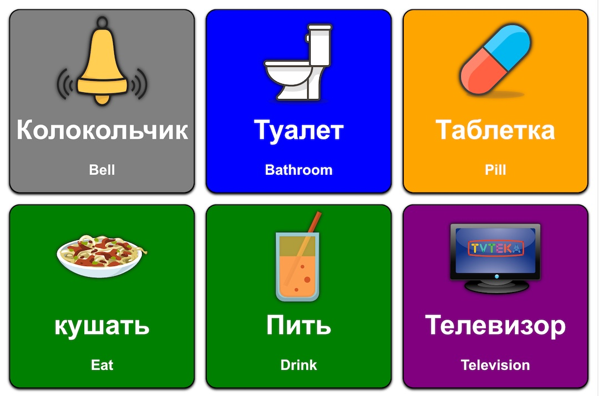
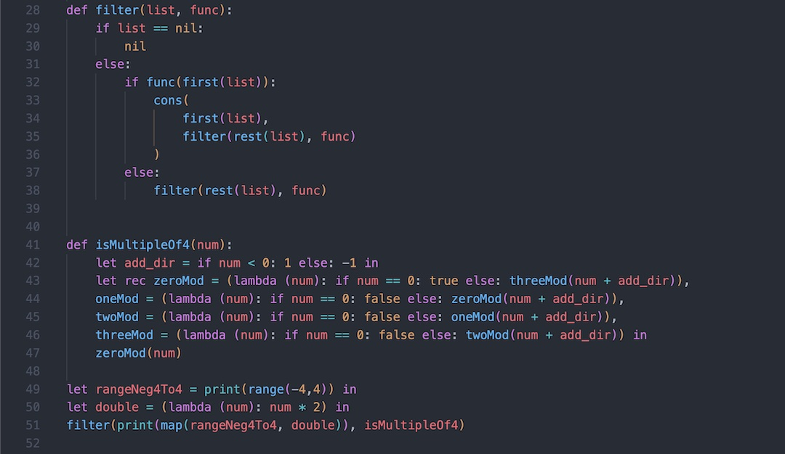
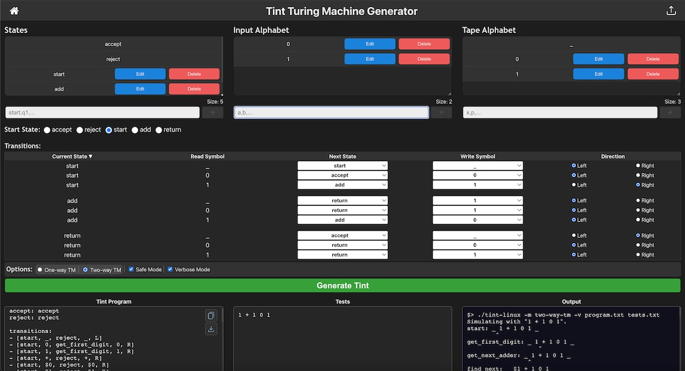
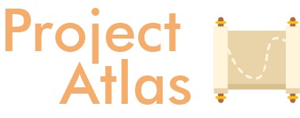
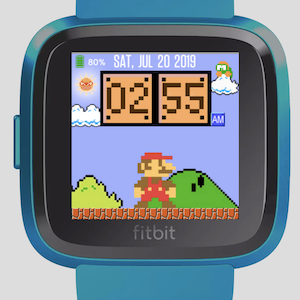
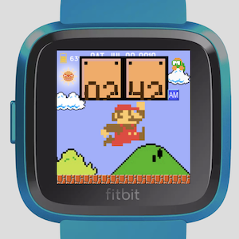
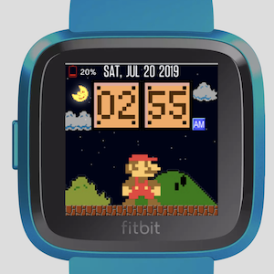
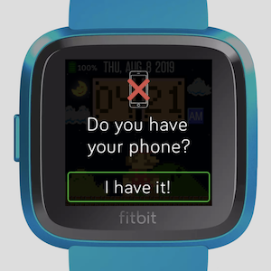
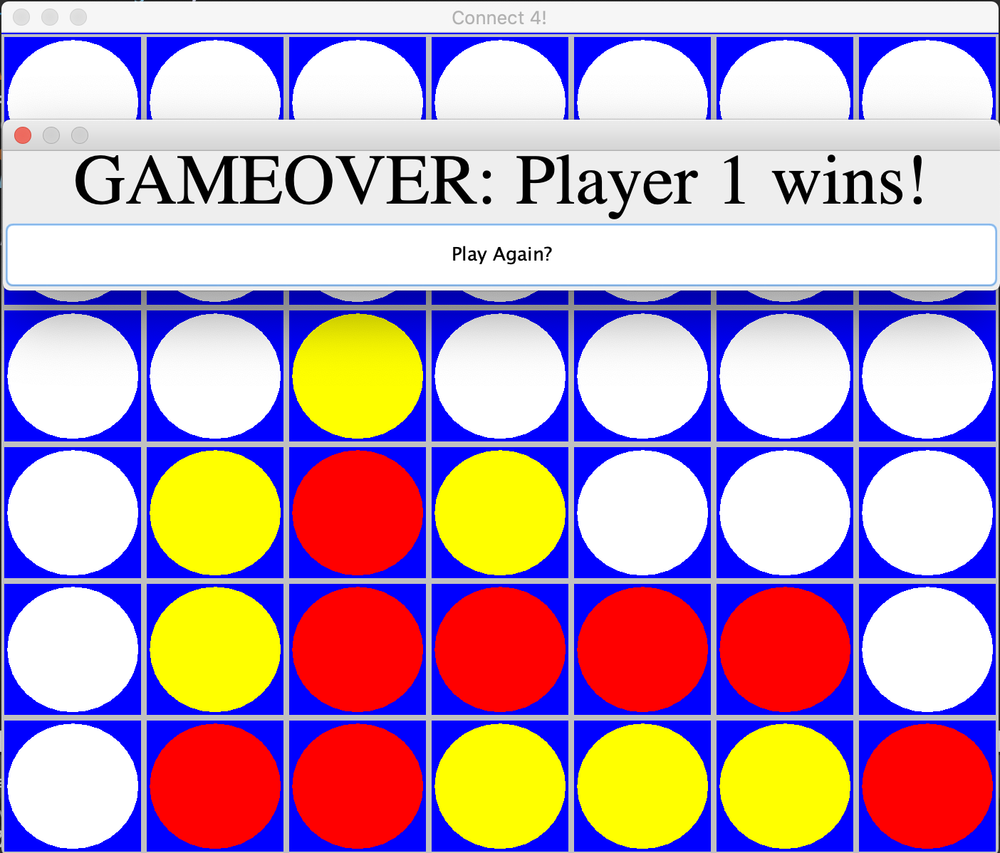

Projects
-
A set of programming challenges completed for Advent of Code 2022. My primary goal was to teach myself Rust and C++, but I completed some challenges in JavaScript and Go for fun, as well.
Rust C++ JavaScript Go -
You're looking at it right now! HTML5 CSS3 JavaScript Web Components JekyllThis website's primary goal is to be my portfolio. However, in its design, there were several principles I put in place in order to challenge myself and learn more about web development. These principles were:
- No web frameworks or libraries (i.e. React, Next.js, etc.).
- Defer or lazily load nonessential assets.
- Preload essential assets.
- Prioritize accessibility, user experience, and other best practices.
- Keep it simple 🙂.
-
A Russian AAC app A basic Augmentative and Alternative Communication (AAC) web app for Parkinson's and Dementia patients. At the moment, it is focused on supporting native Russian speakers.
TypeScript Vite Web Speech API -
A compiled language with a Python-like syntax Cat is a compiler built for CS 4410 at Northeastern University. It is implemented in OCaml and C, and it targets x86 Assembly.OCaml C x86 Assembly Bash Available upon request Features
- Garbage collection via Cheney's algorithm
- Register allocation and dead-code elimination via graph-coloring
- First-class functions and mutually recursive definitions
- JavaScript-like exception handling with try/catch/finally
- Arbitrary length tuples, tuple destructuring, and mutation
- Syntax highlighting via custom TextMate grammar
- Tail-call optimization
- Dynamically typed
- Basic IO functionality
-
An offline video cropping tool in your browser VideoCrop is an offline, browser-based video cropping tool built on top of
Express.js WebAssembly Service Worker APIffmpeg.wasm. The app never uploads or sends anything to a server, therefore performing all video manipulation on the client. -
Set up the perfect campsite with ease Swift RealityKitGlampsite is an iOS app that leverages Augmented Reality (AR) to help you layout your campsite with ease, before needing to make the commitment of an arrangement. The app allows users to place various campsite equipment such as campfires, logs, tents, tables, chairs, and more, into the augmented world, to explore these hypothetical sites.
-
Simulate automata in your browser! Tint Generator is an online GUI for writing, running, and debugging Tint programs and other automata for CS 3800 Theory of Computation. Tint Generator works across all devices and saves your work automatically, without the need of installing anything.
Next.js TypeScript Redux MongoDB Go PWA -
CS 4300 Computer Graphics Final Project An animated scene of a textured teapot and a mug. Built using ThreeJS (WebGL).
JavaScript WebGL Three.js -
Visualize your code in a whole new way  React TypeScript Java VSCode Extension APIProject Atlas is a static analysis and visualization extension for Java projects.
Software engineers and developers spend the majority of their time reading code, and so it's important to have systems in place to understand how code behaves, especially as projects grow in size, scope, and complexity. Thus, Project Atlas creates a visual map of how the a project interacts with itself and directly analyzes of its implementation.
This was built as part of Northeastern's Oasis Accelerator program.
-
An excessively versatile Mocking SpongeBob meme generator JavaScript MathML PWA Canvas API Media Streams APIFeatures
- Automatically and intelligently resizes and formats caption in the lower region of the image.
- Supports uploading other images and TeX typesetting for the caption.
- Includes options for copying mock text, link sharing, and saving images.
- Installable as a Progressive Web App (PWA).
-
Handwritten digit recognition calculator for Fitbit AlgeDraw is the first 12-function calculator on Fitbit with the ability to parse handwritten digits using a custom memory-optimized AI!
JavaScript Fitbit SDK SVG Bluetooth


-
MTA Bus Tracker for Fitbit A Fitbit app for tracking MTA buses and getting their ETA to a specified bus stop.
JavaScript Fitbit SDK MTA Bus Time API -
JavaScript Fitbit SDK SVG Bluetooth
A simple watchface to show your appreciation for Mario! Set your birthday in the settings and when the day comes, Mario will celebrate with you!
Also, if you leave your phone somewhere without noticing, the watchface will notify you with an alert and haptics that it has disconnected.
Inspired by: Mario Time Watchface for Pebble.
    -
Image to ASCII converter A program that converts a given image into ASCII text
Java Swing -
A game of Connect Four in Java Java Swing  -
Vortecs (an anagram of "Vectors") is a free, offline, and simple educational tool for displaying 2D vectors and visualizing 2D linear transformations. It is designed to be used primarily by students who are being introduced to Linear Algebra concepts for the first time.
Java Swing -
An implementation of the Dollar Game in Processing. Based on this Numberphile video.
Java Processing
Miscellaneous
- Tile Game (based on Lights Out)
- April Fools 2022 Prank